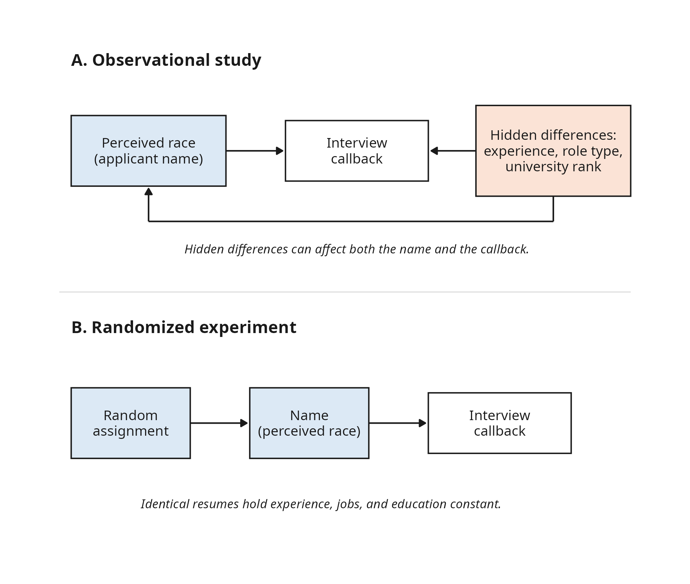

2 From Research Questions to Formal Hypotheses
2.1 Introduction
Suppose you want to investigate whether systemic racial discrimination exists within corporate hiring. This is a serious social question, but how do you reliably measure bias? You cannot simply ask employers if their hiring practices are discriminatory. Instead, you need a measurable, objective signal of their behavior.
In a landmark field experiment, researchers tackled this exact problem to rigorously study labor market dynamics (Bertrand & Mullainathan, 2004). They responded to help-wanted advertisements in Boston and Chicago newspapers by submitting 4,870 fictitious resumes. While the professional qualifications on the resumes were identical, the researchers randomly assigned different first names to manipulate the perceived race of the applicant. Names like “Emily” and “Greg” were used to signify White applicants, while names like “Lakisha” and “Jamal” signified African-American applicants. The researchers then tracked a single outcome: did the applicant receive a callback for an interview?
The original study revealed that resumes with White-sounding names received 50% more callbacks for interviews than identical resumes with African-American-sounding names (Bertrand & Mullainathan, 2004). We will use a subset of this data, labor_market_discrimination.csv, to motivate our work.
While the original experimental data file contains 63 different columns of information, we will focus only on the following specific variables:
first_name: A categorical variable showing the specific first name assigned to the fictitious resume.race: A categorical variable indicating the perceived racial identity of the applicant based on their assigned first name (‘b’ for Black, ‘w’ for White).call: A categorical variable acting as our primary outcome measure, indicating whether the applicant received a callback for an interview (1 = yes, 0 = no).n_jobs: A numerical variable recording the total number of prior jobs listed on the resume.years_exp: A numerical variable recording the total years of professional work experience listed on the resume.
In this chapter, you will learn how to take a broad research interest, like evaluating hiring bias, and translate it into a concrete statistical framework. By the end of this chapter, you will know how to transform abstract concepts into measurable variables, evaluate the quality of your data gathering methods, and construct formal null and alternative hypotheses to rigorously evaluate your claims.
2.2 The Scientific Process
Science begins with curiosity. In the social sciences, this curiosity often starts as a broad research goal, which we define as a general statement about the phenomenon you want to understand. In our motivating example, the researchers had a clear goal. They wanted to investigate whether systemic racial discrimination manifests within corporate hiring pipelines.
While a broad goal provides direction, it is usually too abstract to test directly. Statistics requires precision. You cannot simply drop a vague concept like “discrimination” into a spreadsheet and expect a mathematical answer. We have to translate that overarching goal into a specific, measurable research question. A research question narrows the focus to a precise relationship between defined variables that we can observe and record.
Think of the transition this way: The goal is your destination (understanding hiring bias), and the research question is the exact route you will take to get there. To build that route, you have to ask yourself what physical evidence would prove or disprove your idea. You have to move from an invisible concept to visible, countable data points. For the resume study, the researchers translated their broad goal into a specific question: Do identical resumes receive different interview callback rates depending on whether the applicant’s first name sounds White or African-American?
This translation process is rarely simple, and there is never just one perfect route to your destination. A single research goal can spawn dozens of valid research questions depending on the creative approach of the researcher and the data available. For example, a team with the same goal of studying corporate hiring bias might decide to ask different questions:
- Do minority candidates receive lower starting salary offers than White candidates with the identical qualifications?
- Are African-American employees promoted to managerial positions at the same rate as their White peers within their first five years of employment?
- Do human resource recruiters spend the same number of seconds reading resumes from Black applicants as they do for White applicants?
Each of these alternative questions is a valid way to address the main research goal, but each requires different data, different variables, and different statistical tools.
This is why the transition from a vague interest to a concrete question is the foundation of the scientific process in statistical research. Without a sharply defined question, you will not know what data to collect, and the numbers you do gather will simply be noise. By forcing yourself to state exactly what you are looking for, you create a clear blueprint for the statistical methods that follow.
2.3 Operationalization of Variables and Proxy Variables
When we have a specific research question, we face a new challenge. How do we measure the things we want to study? Concepts like “racial bias” or “labor market interest” are abstract. You cannot put them on a scale or measure them with a ruler.
This leads us to operationalization, which is the process of defining exactly how you will measure an abstract concept in your study. It is the bridge between a theoretical idea and the concrete data you will eventually analyze. If your research goal is to study student stress, you might operationalize “stress” as a student’s score on a standardized psychological questionnaire, or perhaps as their resting heart rate during finals week.
Sometimes, a concept is so abstract or difficult to observe that we cannot measure it directly at all. In these cases, researchers rely on a proxy variable. A proxy variable is a measurable characteristic that stands in for an unobservable or difficult-to-measure concept.
In our motivating study, the researchers wanted to measure how an applicant’s race affected an employer’s response. However, an employer reviewing a resume does not see the applicant in person. How could the researchers introduce the concept of race onto a piece of paper? They operationalized perceived racial identity using a proxy variable: the applicant’s first name. By randomly assigning names statistically associated with White or African-American individuals (recorded in the first_name variable of our dataset), they created a measurable, observable proxy for the abstract concept of perceived race.
2.4 Measurement Quality: Reliability and Validity
Once you have operationalized a concept into a measurable variable, you must evaluate the quality of that measurement. Just because you can measure something does not mean you are measuring it well. We judge measurement quality using two foundational concepts: reliability and validity.
Reliability refers to the consistency of your measurement. If you measure the same phenomenon multiple times under the same conditions, a reliable tool will give you the same result every time. Think of a bathroom scale; if you step on it three times in a row and get three wildly different numbers, the scale is not reliable. In a research setting, if a survey designed to measure anxiety gives the same student a different score depending on the day of the week, the survey lacks reliability.
Validity asks a more critical question: are you actually measuring what you claim to be measuring? A bathroom scale might be perfectly reliable by giving you the same number every time you step on it. However, if the scale is broken and always reads 50 pounds below your actual weight, it is not a valid measure of your body mass.
Let’s identify the outcome variable in our resume dataset, call. The researchers used this variable (coded as 1 for an interview callback and 0 for no callback) to operationalize employer interest. Is this a valid measure? Yes, an invitation for an interview is a direct, behavioral indicator that an employer is interested in a candidate. It is a valid measure of initial labor market interest.
However, you must recognize the limits of validity. Is the call variable a valid measure of ultimate hiring rates or starting salary? No. An employer might call a candidate for an interview but harbor hidden biases that prevent them from ultimately offering the job. A measure is only valid for the specific, narrow phenomenon it captures. This is why you must always align your final research conclusions strictly with the variables you actually measured.
2.5 Internal Consistency and Cronbach’s Alpha
In the previous section, we used the example of a bathroom scale to understand reliability. Physical measurements are usually straightforward. But how do you measure a psychological construct that you cannot physically weigh, like “math anxiety”?
A researcher could just ask a single question: “On a scale of 1 to 10, how anxious does math make you?” However, human emotions are complicated. A student might not feel anxious about listening to a math lecture, but they might feel terrified about taking a math test. A single question rarely captures the entire picture, making it an unreliable tool on its own.
To solve this, researchers use a summated scale (a measurement tool that asks several different, targeted questions about the same overarching concept, and then combines the responses into a single overall score).
To explore this, we will use a new dataset: amas_math_anxiety.csv. This dataset contains the results of the Abbreviated Math Anxiety Scale (AMAS), administered to 2,200 adults. Instead of one broad question, the AMAS uses nine specific questions (variables item_1 through item_9). Participants rated their anxiety from 1 (low anxiety) to 5 (high anxiety) in various scenarios, such as “listening to another student explain a math formula” or “being given a pop quiz.”
2.5.1 The Concept of Internal Consistency
If these nine questions are truly measuring the same underlying concept (math anxiety), then a person’s answers should be fairly similar across the board. If a student reports a “5” on being anxious about a pop quiz, we would expect them to also report a high number for taking a final exam. If their answers are wildly contradictory, our survey tool is broken.
This specific type of reliability is called internal consistency. It measures how well the different items on a survey hang together. Before a researcher is allowed to add up the nine items to give a student a final “Math Anxiety Score,” they must prove that the scale has high internal consistency.
2.5.2 Cronbach’s Alpha (\(\alpha\))
To mathematically prove that a survey is internally consistent, researchers use a statistic called Cronbach’s alpha, represented by the Greek letter \(\alpha\).
Cronbach’s alpha gives us a final value that generally ranges from \(0\) to \(1\).
- 0 indicates no internal consistency: The survey questions have nothing in common; the respondents are essentially answering randomly.
- 1 indicates perfect internal consistency: The questions perfectly align with one another.
In the social sciences, researchers generally look for a Cronbach’s alpha of 0.70 or higher before they consider a summated scale to be reliable enough to use in a study. For the math anxiety data, we would find a Cronbach’s alpha well above \(0.80\). Because the scale exceeds the \(0.70\) threshold, we have the mathematical green light to sum those nine items into a single, reliable “Math Anxiety” composite score for each participant.
2.6 Methods of Data Gathering
Once you have defined your research question and decided exactly how to measure your variables, you face a logistical hurdle. How do you go out into the world and collect the data? In the social sciences, researchers generally choose between two primary methods of data gathering: observational studies and controlled experiments.
The method you choose dictates what kind of conclusions you are allowed to draw from your data. We will explore both approaches in detail, using our corporate hiring bias scenario as a guide.
2.6.1 Observational Studies
An observational study is exactly what it sounds like. Researchers observe individuals and measure variables of interest, but they do not attempt to manipulate the environment or influence the responses. The goal is to record the world exactly as it naturally exists.
Surveys and polls are the most common examples of observational studies. If you want to know about the study habits of college freshmen, you might send out a questionnaire. If an economist wants to study national income trends, they might turn to tax records. In both cases, the researcher is simply a record-keeper.
If we wanted to study hiring bias using an observational approach, we might partner with a large corporation and ask to see their human resources data for the past five years. We could record the perceived race of all applicants and track whether or not they were hired.
While observational studies are excellent for gathering large amounts of real data, they come with significant vulnerabilities. The primary issue is bias, which is a systematic distortion of the data that pushes results away from the truth. In survey design, bias can sneak in through poorly worded questions that lead respondents toward a specific answer, or through non-response bias, where the people who choose to ignore the survey are fundamentally different from those who fill it out.
Furthermore, observational studies face a major hurdle when trying to prove a cause-and-effect relationship. Imagine our observational HR study reveals that White applicants were hired at a higher rate than African-American applicants. Can we definitively claim this difference was caused by racial bias?
We cannot. Because we merely observed existing data, there might be hidden variables we failed to account for. Perhaps the White applicants in that specific data pool happened to have more years of experience, or applied for less competitive entry-level roles, or had degrees from higher-ranking universities. Because we did not control the environment, these hidden factors (often called confounding variables) blur the lines of cause and effect. An observational study can prove that two variables are connected, but it cannot definitively prove that one caused the other.
2.6.2 Experimental Design
To prove cause and effect, researchers must step out of the role of passive observers and take active control of the environment. An experiment involves deliberately manipulating one or more variables to observe the direct effect on an outcome.
A well-designed experiment relies on three core principles:
- Control: Researchers must hold all outside variables constant so they do not interfere with the results. If you are testing a new plant fertilizer, you ensure all plants get the same amount of sunlight and water.
- Randomization: Subjects or treatments must be assigned randomly. This ensures that any unavoidable natural differences between subjects are spread evenly across all groups, preventing hidden biases from skewing the results.
- Replication: The experiment must be conducted on a large enough number of subjects to ensure that the results are not just a statistical fluke.
This is where the genius of the Bertrand and Mullainathan (2004) study becomes clear. They knew an observational survey of employment data would be clouded by varying applicant qualifications. Instead, they built a randomized field experiment.
Here is how they applied the three core principles: First, they applied extreme control by generating fictitious resumes. They ensured that the educational backgrounds, the number of prior jobs (n_jobs), and the years of experience (years_exp) were identical for competing candidates. Second, they used randomization. They took these identical resumes and randomly assigned either a White-sounding name or an African-American-sounding name. Finally, they employed large-scale replication by submitting 4,870 resumes to various employers.
By designing an experiment, the researchers effectively stripped away all the confounding noise. Because the resumes were identical in every way except for the randomly assigned names, any difference in the interview callback rate (call) could only be caused by one thing: the perceived race of the applicant.

This is why randomized, controlled experiments are considered the gold standard in research. While observational studies are restricted to observing associations, a rigorously controlled experiment grants you the power to make confident, causal claims.
2.7 Translating Research Questions into Statistical Questions
We have moved from a broad research goal to a specific research question. However, we are still not quite ready to apply our mathematical tools. This next transition is often one of the most challenging steps in the entire research process. We must translate our specific research question into a formal statistical question.
A research question asks about a relationship in the population. A statistical question asks about the numbers that represent that relationship. To qualify as a true statistical question, it must meet three strict requirements:
- It must require gathering data. You cannot answer a statistical question with a simple web search, a dictionary definition, or a philosophical argument. The only way to find the answer is to go out, collect data, and calculate a result.
- It must account for variability. The answer to a statistical question will naturally fluctuate from sample to sample. If we ran our resume experiment again next month with a different set of employers, we would not get the same callback rates. A statistical question expects and embraces this natural variation.
- It must identify a specific statistical measure. The question must explicitly state what mathematical summary you are going to use to compare your groups. In Chapter 1, we learned about measures like the mean, median, and proportion. A statistical question forces you to declare exactly which of these you are hunting for.
The hardest part is usually that third requirement. How do you know which measure to pick? The secret is to look closely at the outcome variable you are measuring. Let’s walk through a few examples to see this translation process in action.
Example 1: The Hiring Bias Experiment
Our research question asks: Do identical resumes receive different interview callback rates depending on whether the applicant’s first name sounds White or African-American?
To find our statistical measure, we have to start with our outcome variable. We are measuring whether or not an applicant received a callback. This is categorical data (a simple “yes” or “no”). You cannot calculate an “average” of a yes/no question. Instead, we have to count the number of successes (callbacks) and divide by the total number of resumes. Therefore, the only appropriate mathematical measure for this categorical outcome is a proportion. We can now write our final statistical question: Is the proportion of callbacks for resumes with White-sounding names significantly different from the proportion of callbacks for resumes with African-American-sounding names?
Example 2: Studying Student Health
Imagine a university health researcher with a new research question: Do collegiate athletes get a different amount of sleep on weeknights compared to non-athletes?
Here, the outcome variable is hours of sleep. This is numerical data, which means we have to choose between a few different measures of center. If we were to picture a histogram of typical weeknight sleep for young adults, the data usually forms a roughly symmetric, bell-shaped distribution. Most students will cluster around the center (perhaps 7 hours), with roughly equal numbers of students tailing off toward extreme lack of sleep or unusually long sleep. Because the data is symmetric and generally lacks severe outliers pulling in one specific direction, the mean (the mathematical average) is an accurate and standard summary of the group. We can formalize this into a statistical question: Is the mean number of weeknight sleep hours for student athletes different from the mean number of weeknight sleep hours for non-athletes?
Example 3: Analyzing Financial Outcomes
Finally, suppose a sociologist asks this research question: Do public university graduates carry different amounts of student debt compared to private university graduates?
The outcome variable here is student debt. Like sleep hours, debt is numerical. However, financial data is almost never symmetric. As we discussed in Chapter 1, financial distributions are usually heavily right-skewed. Most students will have a moderate amount of debt, but a handful of students might have large outliers due to expensive graduate programs or medical school. If we used the mean, those few large outliers would artificially pull the average upward, painting a misleading picture of the typical student. To protect our analysis from those outliers, we need a resistant measure of center. Therefore, the median is the safest and most appropriate choice. Our final statistical question becomes: Is the median student debt of public university graduates different from the median student debt of private university graduates?
By forcing yourself to identify the specific measure (like a mean, median, or proportion) right now, you are doing yourself a big favor. The statistical measure you choose during this step will dictate which statistical method of analysis you must use later in the process.
2.8 Formalizing Hypotheses
We have successfully translated our broad research interest into a specific statistical question: Is the proportion of callbacks for resumes with White-sounding names significantly different from the proportion of callbacks for resumes with African-American-sounding names? The final step before we can analyze any data is to set up a formal framework for testing this question. In statistics, we do this by establishing two competing claims about the population. We call these claims hypotheses.
2.8.1 The Null and Alternative Hypotheses
Every statistical test requires two mutually exclusive statements.
The Null Hypothesis (denoted as \(H_0\)) acts as the default assumption. It is the universal claim of “no effect,” “no difference,” or “no relationship.” For the resume experiment, the null hypothesis states that employers do not care about the perceived race of the applicant, meaning the callback rates are exactly the same for both groups.
The Alternative Hypothesis (denoted as \(H_1\)) is the exact opposite. It represents the presence of an effect, a difference, or a relationship in the population. This is usually the claim that you, the researcher, are actually trying to prove. In our hiring bias study, the alternative hypothesis is the claim that perceived race does affect interview callback rates. You might occasionally see this written as \(H_a\) in older textbooks or specific disciplines, but \(H_1\) is the modern standard across most scientific fields.
2.8.2 The Logic of the Null: The Burden of Proof
You might wonder why we need a null hypothesis at all. Why not just test the claim we actually care about?
Science requires a skeptical baseline. The statistical process operates very much like a criminal trial in the United States justice system. In a courtroom, a defendant is presumed innocent until proven guilty. The prosecutor must provide an overwhelming amount of evidence to reject that presumption of innocence. The defense does not have to prove the defendant is innocent; they just have to show that the prosecutor’s evidence is weak.
In research, the null hypothesis represents that presumption of innocence. We always assume there is no effect, no difference, and no bias until the data forces us to believe otherwise.
Consider a medical trial testing a new, experimental drug against a simple sugar pill (a placebo). The ethical and safe approach is to assume the new drug does absolutely nothing (\(H_0\)). If we assumed the drug worked without evidence, we might give patients a useless or dangerous chemical. To convince the medical community to adopt the new treatment (\(H_1\)), the researchers bear the burden of proof. They must provide overwhelming data that the new drug performs significantly better than the placebo.
We will discuss the risks of making the wrong decision in the next chapter, but for now, remember this core philosophy: we require overwhelming evidence to abandon the safety of the null hypothesis.
2.8.3 Hypothesis Universals: A Summary
To help keep these concepts straight as we move into actual testing, here is a summary of the universal rules that govern our two hypotheses.
| Feature | Null Hypothesis (\(H_0\)) | Alternative Hypothesis (\(H_1\)) |
|---|---|---|
| Core Meaning | No effect, no difference, or no relationship exists. | An effect, a difference, or a relationship exists. |
| Philosophical Stance | The assumed baseline. It requires zero evidence to maintain. | The claim requiring evidence. The burden of proof rests entirely here. |
| Mathematical Boundary | Always uses strict equality (\(=\)). It provides an exact mathematical anchor point for our test. | Always uses “does not equal” (\(\neq\)). We look for any significant difference, regardless of direction. |
Note on two-sided testing: By strictly using the “does not equal” sign (\(\neq\)) for our alternative hypothesis, we are conducting a “two-sided” test. This means we are keeping our minds open to the effect moving in either direction. For example, if we only check to see if a treatment is better than a placebo, we would miss the possibility that it’s actually worse than a placebo. Once we prove an effect exists, we will use other tools (like confidence intervals and effect sizes) to talk about the specific direction and magnitude of that effect. Choosing to only look in one direction before the test begins is a discouraged practice in modern research.
2.8.4 Stating the Hypotheses with Parameters
To make these conceptual claims mathematically testable, we write them out using the specific parameters we identified in the previous step.
Remember that parameters are the true, hidden numbers that describe the entire population. To keep things organized, statisticians universally use Greek letters to represent these population parameters. Since we are comparing proportions, we will use the Greek letter pi (\(\pi\)) to represent the true population proportion.
Here are our two parameters for the study:
- \(\pi_W\) represents the true proportion of callbacks for all identical resumes with White-sounding names.
- \(\pi_{AA}\) represents the true proportion of callbacks for all identical resumes with African-American-sounding names.
Now, we can write our hypotheses mathematically. The null hypothesis always anchors on exact equality, meaning there is no difference between the groups. The most intuitive way to write this is to simply set the two parameters equal to one another.
Null Hypothesis (\(H_0\)): \(\pi_W = \pi_{AA}\)
(Plain English: There is no difference in the true callback proportions between the two groups.)
The alternative hypothesis claims that a significant difference does exist, meaning the two groups are not equal.
Alternative Hypothesis (\(H_1\)): \(\pi_W \neq \pi_{AA}\)
(Plain English: There is a significant difference in the true callback proportions between the two groups.)
The Software Format
While setting the parameters equal to each other is how human beings naturally think about the null hypothesis, it is not how computers handle the math. Statistical software programs do not place groups on opposite sides of an equals sign. Instead, they subtract one group from the other.
If two groups are truly equal (as the null hypothesis claims), then subtracting one from the other must result in exactly zero. Therefore, you will almost always see statistical software output and advanced research papers format these same hypotheses by setting the difference to zero:
- Software Null Hypothesis (\(H_0\)): \(\pi_W - \pi_{AA} = 0\)
- Software Alternative Hypothesis (\(H_1\)): \(\pi_W - \pi_{AA} \neq 0\)
Both formats are mathematically identical and mean the same thing. We will generally use the intuitive format (\(\pi_W = \pi_{AA}\)) when setting up our ideas, but be prepared to read the software format (\(\pi_W - \pi_{AA} = 0\)) when interpreting your final results.
With these formal mathematical statements locked in place, our research blueprint is complete. We are finally ready to calculate the evidence.
2.9 Common Mistakes and Misconceptions
As you begin translating your own research ideas into formal statistical frameworks, watch out for these three common traps.
2.9.1 Writing Hypotheses After Gathering Data
Perhaps the most frequent mistake researchers make when first learning to write formal hypotheses is putting their sample data directly into the mathematical statements. Remember that hypotheses are claims about the invisible, unknown population. We already know exactly what our sample data says; we do not need to form hypotheses about it.
More importantly, the scientific method strictly requires you to set your hypotheses before you collect or analyze your data. While exploring a dataset to see what interesting patterns emerge (known as exploratory analysis) is a valuable tool for generating future research ideas, it is not hypothesis testing. If you dig through a dataset, find a surprising difference between two groups, and then write a hypothesis pretending you predicted that difference all along, you are violating the scientific process. This practice can lead to unethical research because it tricks the mathematical formulas into finding “significant” results that are actually just random flukes. We will explore the dangers of this practice, often called p-hacking, in our final chapter on statistics and ethics.
2.9.2 Confusing Reliability with Validity in Proxy Variables
It is easy to mix up these two concepts because we often use them interchangeably in everyday language. In research, they are strictly separated, and this distinction becomes critical whenever you use a proxy variable.
Remember the broken scale example. A scale that always reads exactly 10 pounds too light is perfectly reliable (it gives the same wrong answer every time), but it is invalid (it does not measure your actual weight). When we measure something abstract like “employer interest” using a proxy variable like “interview callbacks,” validity becomes a primary concern. A measurement must be valid before its reliability even matters. You can reliably record the exact number of seconds an employer spends on a resume, but if that time does not actually indicate their likelihood of hiring the candidate, your reliable proxy is invalid.
2.9.3 The Causation Illusion in Observational Studies
When researchers find a strong relationship in an observational study, it is tempting to jump straight to cause and effect. Even before we get to the mathematical formulas of testing, you must remember that your study design strictly limits the types of claims you can make.
Unless you personally controlled the environment and randomly assigned treatments in a formal experiment, you cannot prove causation. There are always hidden, confounding variables at play in practice. Observational studies can only prove that two variables are connected or associated. A helpful way to frame this in your mind is to remember that observational studies describe what is happening, while randomized experiments test why it is happening.
A Note on Modern Causal Research: While a single observational study cannot prove causation, modern statistical software has popularized a technique called meta-analysis. A meta-analysis mathematically combines the results of dozens or even hundreds of independent studies on the same topic. By pooling large amounts of observational and experimental data together, researchers can sometimes isolate variables well enough to build convincing arguments for cause and effect, even without a single, controlled master experiment.
2.10 Key Concepts
- The scientific process requires translating a broad research goal into a specific, measurable research question before gathering any data.
- Operationalization is the process of defining exactly how you will measure an abstract concept, often requiring a proxy variable if the concept cannot be observed directly.
- A valid measurement accurately captures the intended theoretical concept, while a reliable measurement produces consistent results over multiple attempts.
- Cronbach’s alpha (\(\alpha\)) is a statistic used to measure the internal consistency of a survey or scale, typically ranging from \(0\) to \(1\), with values above \(0.70\) considered acceptable in social science research.
- Observational studies can identify connections between variables, but only randomized, controlled experiments can prove a cause-and-effect relationship.
- A statistical question must require data collection, account for natural variation, and identify a specific mathematical measure (like a mean, median, or proportion).
- The null hypothesis (\(H_0\)) represents the default assumption of no effect or no difference. Researchers bear the burden of proof to reject it.
- The alternative hypothesis (\(H_1\)) represents the claim of a significant effect or difference. It is established only when the data provides overwhelming evidence.
- Modern ethical research expects two-sided hypothesis testing (using \(\neq\)), checking for an effect in any direction before determining its specific size.
2.11 New Notation
| Symbol | Read Aloud As | What it Represents |
|---|---|---|
| \(H_0\) | “H-naught” or “H-zero” | The null hypothesis; the mathematical assumption of no effect, no difference, or exact equality. |
| \(H_1\) | “H-one” | The alternative hypothesis; the mathematical claim that a significant effect or difference exists. |
2.12 Chapter Exercises
2.12.1 Interpretation
1. A psychologist develops a new questionnaire to measure “student resilience” in the face of academic setbacks. A student takes the survey on Monday and receives a high resilience score. They take the same survey again on Tuesday, with no new academic events having occurred, but receive a low resilience score. What measurement property is this new survey lacking? Explain your reasoning.
2. An economist wants to study the broad concept of “financial well-being” among young adults. Because well-being is an abstract concept, they operationalize it using a proxy variable: the total number of credit cards a person owns. Why might this be an invalid proxy variable for financial well-being?
3. A university researcher reviews five years of registrar records and discovers a strong relationship: students who take early morning classes tend to have higher graduation rates than students who only take afternoon classes. Based entirely on this study design, can the researcher conclude that waking up early causes students to graduate at higher rates? Why or why not?
4. In the scenario from Question 3, identify at least one hidden confounding variable that might explain the connection between early morning classes and higher graduation rates, demonstrating why we cannot assume cause and effect.
2.12.2 Choosing a Method
5. A sociologist wants to know if the rate of homeownership differs between millennials living in urban environments versus millennials in rural environments. To answer this, should they compare a mean, a median, or a proportion? Explain your choice based on the type of data being collected.
6. A public health official is studying the hospital recovery times (measured in total days) for a specific joint replacement surgery. Most patients recover and are discharged in 3 to 4 days, but a small handful of patients experience severe complications and remain in the hospital for months. Which mathematical measure of center should the official use to summarize the typical recovery time for these patients, and why?
7. An economist has a broad research goal: they want to know if a baby’s weight at birth differs between a county with a high median household income and a county with a median household income right at the poverty line. Given that birth weights are symmetric and closely follow a normal distribution curve, translate this broad research interest into a formal statistical question, ensuring you identify the specific mathematical measure of center the economist should compare.
8. An education researcher wants to rigorously prove that a newly developed reading curriculum improves standardized test scores for third graders. Describe how they could design a randomized experiment to test this, explicitly mentioning how they would apply the concepts of control and randomization.
2.12.3 Communicating Results
9. A political scientist is studying local voter turnout. They want to test if the true proportion of registered voters who cast a ballot is different in Natrona County compared to Carbon County. Write the formal null (\(H_0\)) and alternative (\(H_1\)) hypotheses for this test.
10. A medical researcher is running a clinical trial to test whether a new physical therapy routine speeds up injury recovery compared to the standard routine. What is the conceptual null hypothesis in this context, and why does the scientific method require the researcher to assume it is true before beginning the study?
11. You are reading a published research paper, and the authors provide the following mathematical statements from their statistical software:
- \(H_0: \pi_{placebo} - \pi_{treatment} = 0\)
- \(H_1: \pi_{placebo} - \pi_{treatment} \neq 0\)
Translate these two mathematical statements into a plain English explanation of what the researchers are assuming, and what they are trying to prove.
12. A student reads an observational study about the difference in smoking rates between two cities. For their homework, the student writes the following null hypothesis: \(H_0: p_1 = p_2\). What is the critical error in the student’s notation, and how should it be fixed to correctly represent a formal hypothesis?
2.12.4 Software Application
13. Open the amas_math_anxiety.csv dataset in your statistical software. We will analyze the internal consistency of the 9-item Abbreviated Math Anxiety Scale using the baseline participant responses.
- Use your software to calculate Cronbach’s alpha (\(\alpha\)) for the nine items (
item_1throughitem_9). Report the exact value from your output.
- Use your software to calculate Cronbach’s alpha (\(\alpha\)) for the nine items (
- Based on the \(0.70\) threshold discussed in the chapter, determine if this scale displays acceptable internal consistency. State your conclusion in plain English.
- Suppose that, in a different sample, removing
item_1would drop the overall alpha value to \(0.65\). Should the researcher remove it? Explain how this change would affect the internal consistency of the remaining items.
- Suppose that, in a different sample, removing